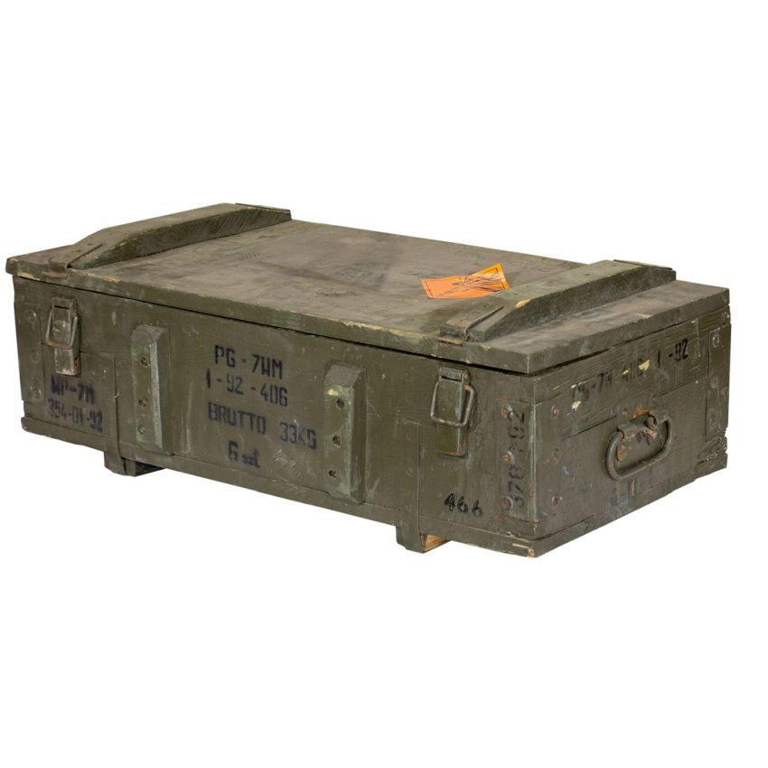
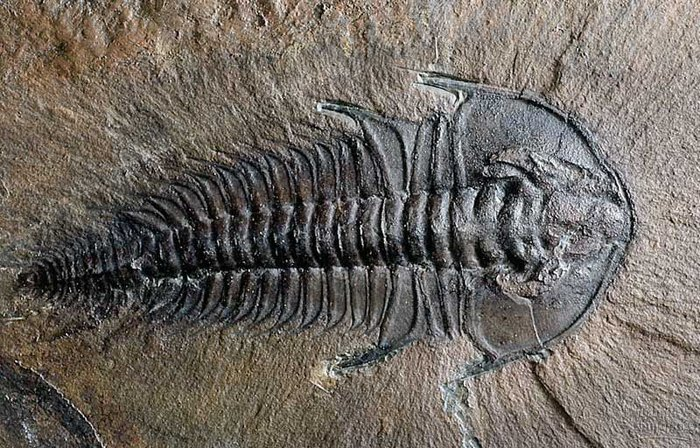
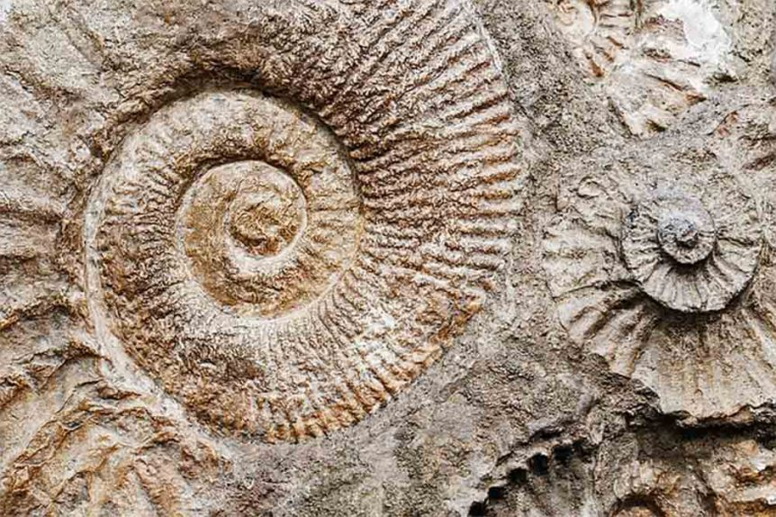

První díla
V roce 1846 zveřejnil Barrande výsledky zkoumání ve svých prvních dílech, která vyšla ve Vídni a Lipsku. V zahraničí byla Barrandova svědectví o českých
prvohorních fosiliích přijata mnohem příznivěji než v Čechách, kde se někteří vlastenci dílem tohoto cizince cítili neprávem předstiženi. Kustod přírodovědeckých sbírek Corda a berounský sběratel trilobitů Hawel urychleně reagovali dílem Prodrom einer Monographie der böhmischen Trilobiten, kterým získali prvenství v pojmenování mnoha druhů, rodů a čeledí. Barrandovy zápisky a následné práce však od samého počátku obsahovaly nepoměrně systematičtější popisy i nákresy geologických profilů.
Encyklopedie Système silurien du centre de la Bohême
Průzkumy a práce se sbírkami Barrandovi zabíraly téměř veškerý čas a dožadovaly se velkého množství finančních prostředků.
Poskytovali mu je především hrabě Chambord a Císařská akademie ve Vídni, kterou ale o příspěvek musel každým rokem žádat znovu. Od roku 1852 postupně téměř 30 let tvořil a vydával encyklopedii Silurský systém středních Čech (Système silurien du centre de la Bohême). Do roku 1881 vyšlo 22 svazků. Psal do ní texty, dělal náčrty budoucích litografií, vedl kvůli ní různorodou korespondenci a pro inspiraci i cestoval do zahraničí. Na téměř 6 000 stranách doplněných více než 1 000 litografickými tabulemi s desítkami ukázek popsal přes 3 500 druhů zkamenělých organismů. Jde o nejrozsáhlejší paleontologickou práci všech dob, kterou vytvořil jeden člověk.[4] Po Barrandově smrti se podařilo vydat ještě dalších 7 svazků encyklopedie.[5]
Přínos vědě, kritika
Bohatá česká prvohorní naleziště proslavil tímto dílem daleko za hranicemi. Jeho práce neváhal citovat i tvůrce nové evoluční teorie Charles Darwin,
přestože Barrande zůstával věren katastrofickým teoriím, o nichž slýchával v mládí na přednáškách George Cuviera. Tyto názory Barranda se odrazily i ve sporech, které vedl s jinými geology ohledně dalšího vlastního pětisvazkového díla Obrana kolonií (Défense des colonies). Ani Barrande se totiž nevyvaroval omylů: když zkoumal zkameněliny v okolí Prahy, nemohl si nevšimnout, že na některých místech nachází společně zkameněliny živočichů, kteří žili v různých geologických obdobích oddělených milióny či desítkami miliónů let. Vysvětloval to tak, že žili spolu – mladší a pokročilejší formy života měly nejdříve vytvořit ve „starém“ prostředí malé ostrůvky, z nichž se později měly postupně rozšířit po celé planetě; tato společenstva nazval kolonie. Jeho vědecká autorita byla velká, tento názor však mezi paleontology zvedl bouři nesouhlasu. Nejdůraznějším odpůrcem kolonií byl český geolog Jan Krejčí; spolu s ostatními poznal, že v důsledku pohybů zemské kůry se starší vrstvy hornin nasunuly na mladší nebo se do nich vklínily. Dnešní věda se přiklání na stranu jeho odpůrců a kromě toho také na rozdíl od něj považuje při průzkumech za klíčové vrstvy, které jsou na zkameněliny chudší. Barrande dával naopak přednost místům a vrstvám, kde se nacházelo zkamenělin nejvíc a v co nejúplnějším stavu. Právě díky tomu se mu podařilo vytvořit faktografické dílo nepřekonatelných rozměrů.
Je zajímavé, že Krejčí, zcela neústupný ve svém odporu proti teorii kolonií, v roce 1869 své názory náhle odvolal.
Podle některých autorů je možné že šlo o taktický manévr:[6] v české společnosti zavládla obava, že Barrande své sbírky, práci i prostředky odkáže do zahraničí. Obavy se nakonec nenaplnily – Barrande celé své dílo daroval českému Národnímu muzeu.
|  | Počet beden do kterých byla umístěna Barrandova sbírka | téměř 1200 |
|  | Počet trilobitů v Barrandových sbírkách | téměř 17 000 |
|  | Celkový počet druhů, které popsal | více než 3500 |